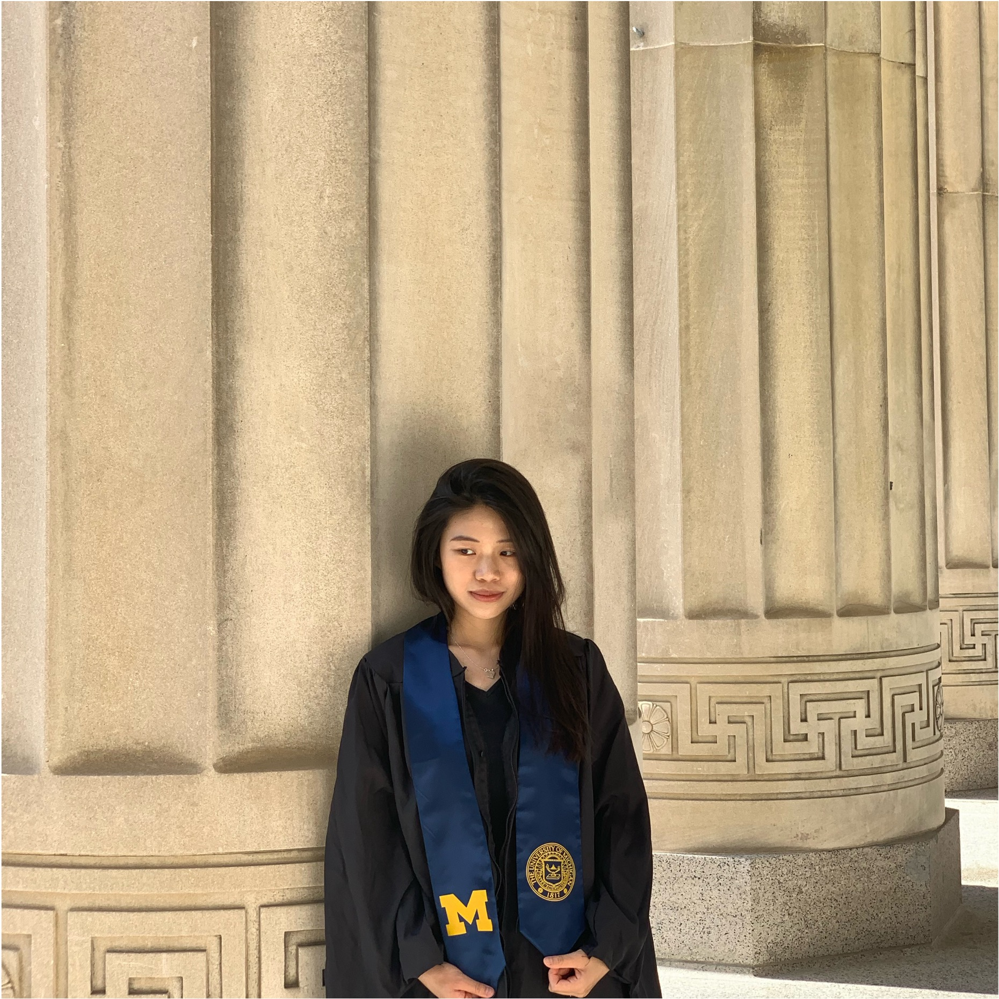
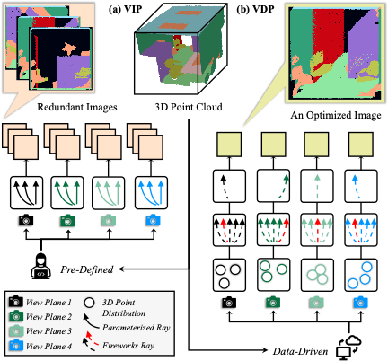
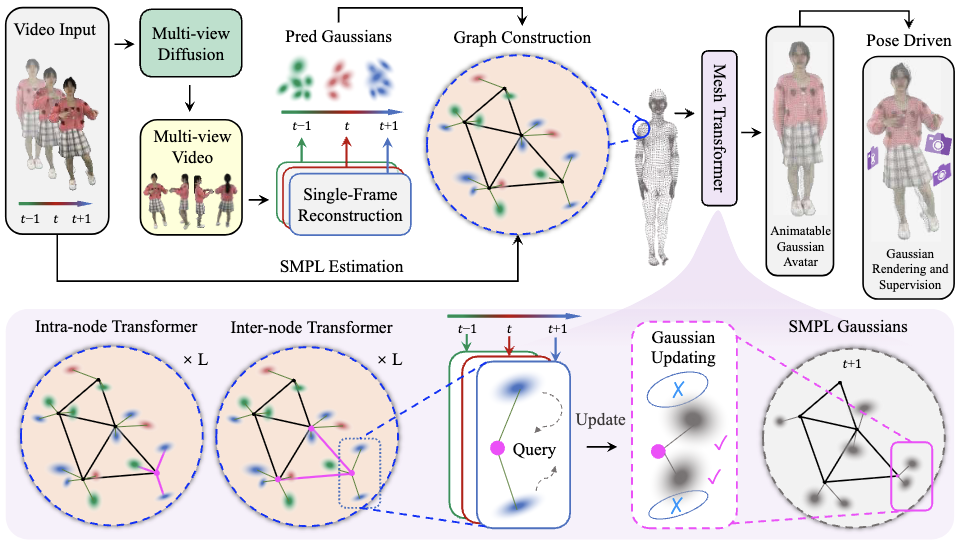
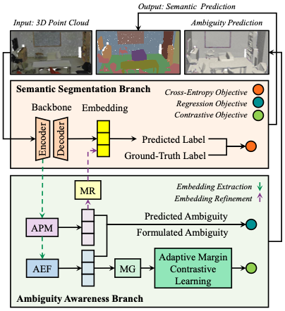
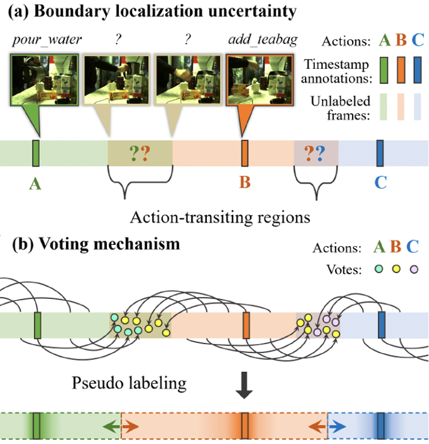
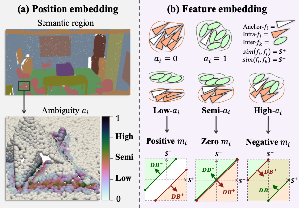

|
Yang Chen
I am a Ph.D. candidate at Nanyang Technological University, Singapore. Prior to that, I received the M.S. degree at University of Michigan, and obtained B.S. degree at University of Waterloo. My research interests revolve around 3D computer vision and deep learning.
Email /
Github /
Google Scholar
|

|
|

|
PointVDP: Learning View-Dependent Projection by Fireworks Rays for 3D Point Cloud Segmentation
Yang Chen, Yueqi Duan, Haowen Sun, Ziwei Wang, Jiwen Lu, Yap-Peng Tan
Arxiv, 2025
[PDF]
We propose view-dependent projection to facilitate point cloud segmentation, designing efficient 3D-to-2D mapping that dynamically adapts to the spatial geometry from view variations. The projections from 3D point distributions produce highly informative single-image inputs, predicting rays inspired by the adaptive behavior of fireworks.
|
|

|
Learning Efficient and Generalizable Human Representation with Human Gaussian Model
Yifan Liu, Shengjun Zhang, Chensheng Dai, Yang Chen, Hao Liu, Chen Li, Yueqi Duan
Proceedings of the IEEE/CVF International Conference on Computer Vision (ICCV), 2025
[PDF]
[Code]
[Project Page]
In this paper, we propose Human Gaussian Graph (HGG) to generate generalizable and animatable Gaussian representations. We leverage the human structure prior to recover generalizable and animatable Gaussian representations.
|
|

|
Ambiguity-aware Point Cloud Segmentation by Adaptive Margin Contrastive Learning
Yang Chen, Yueqi Duan, Haowen Sun, Jiwen Lu, Yap-Peng Tan
IEEE Transactions on Multimedia (TMM), 2025
[PDF]
[Code]
We propose AMContrast3D++ integrating with two branches trained in parallel, where a novel ambiguity prediction module concurrently learns point ambiguities from generated embeddings. We design adaptive objectives for individual points based on their ambiguity levels, aiming to ensure the correctness of low-ambiguity points while allowing mistakes for high-ambiguity points.
|
|

|
Boundary Voting Network for Ambiguity-aware Timestamp-supervised Action Segmentation
Runzhong Zhang, Yueqi Duan, Yang Chen, Weipeng Hu, Chen Cai, Suchen Wang, Yap-Peng Tan
IEEE Transactions on Circuits and Systems for Video Technology (TCSVT), 2025
[PDF]
In this paper, we introduce the boundary voting network that mitigates feature ambiguity by hierarchically propagating video-level global prior knowledge into local action-transiting regions.
|
|

|
Adaptive Margin Contrastive Learning for Ambiguity-aware 3D Semantic Segmentation
Yang Chen, Yueqi Duan, Runzhong Zhang, Yap-Peng Tan
IEEE International Conference on Multimedia and Expo (ICME), 2024 (Oral Presentation)
[PDF]
[Code]
We propose an adaptive margin contrastive learning method for 3D point cloud semantic segmentation, namely AMContrast3D.
|
Academic Services
- Reviewer, IEEE Transactions on Multimedia (TMM).
- Reviewer, IEEE International Conference on Multimedia and Expo (ICME).
- Reviewer, Chinese Conference on Pattern Recognition and Computer Vision (PRCV).
|
Honors and Awards
- Academic Achievement on the Dean’s Honors List, University of Waterloo.
- Faculty of Science-Chinese Program Award and Scholarship, University of Waterloo.
- The 7th Blue Bridge Cup Competition, C/C++ Group, The 3rd Prize.
- China CCTV Star of Outlook English Talent Competition, Shandong Division, The 2nd Prize.
|
|
{kind=link}